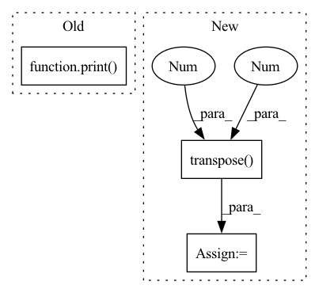

Pattern ID :40858

Before Change
idx = torch.arange(0,T,interval)
rpn_inputs = inputs[:,:,idx]
rpn_inputs = rpn_inputs.transpose(1,2).contiguous().view(N*(T//interval),C,H,W)
print(rpn_inputs.shape)
with torch.no_grad():
proposals = rpn(rpn_inputs)
proposals = proposals.view(N,T//interval,10,4)
outputs = model(inputs, proposals)
After Change
interval = 16
// sample frames for RPN
idx = torch.arange(0,T,interval)
rpn_inputs = inputs[:,:,idx].transpose(1,2).contiguous()
rpn_inputs = rpn_inputs.view(-1,C,H,W)
if len(inputs) < max_N:
print("Modified from {} to {}".format(len(inputs), max_N))
rpn_inputs = torch.cat((rpn_inputs, rpn_inputs[:(max_N-len(inputs))*(T//interval)]))
In pattern: SUPERPATTERN
Frequency: 3
Non-data size: 3
Instances
Fragment ID: 115263735
Project Name: jd730/strg
Commit Name: b98d2a6a9e626ae8be88646109eca0d53f1f4af5
Time: 2020-06-12
Author: jdhwang730@gmail.com
File Name: validation.py
M Class Name: AnonimousClass
N Class Name: AnonimousClass
M Method Name: val_epoch(9)
N Method Name: val_epoch(9)
M Parent Class:
N Parent Class:
M File Name: validation.py
N File Name: validation.py
M Start Line: 40
M End Line: 49
N Start Line: 34
N End Line: 62
'>
Before Change
// Evaluate using museval
scores = museval.eval_mus_track(track, estimates, output_dir=self.json_dir)
results.add_track(scores)
print(scores)
print(results)
def apply_multichannel_wiener_filter(mixture, estimated_amplitude, channels_first=True, eps=EPS):
After Change
for target in self.sources:
estimated_path = os.path.join(self.estimates_dir, name, "{}.wav".format(target))
estimated, _ = torchaudio.load(estimated_path)
estimated = estimated.numpy().transpose(1, 0)
estimates[target] = estimated
estimated_accompaniment += estimated
estimates["accompaniment"] = estimated_accompaniment
'>
Fragment ID: 115263732
Project Name: tky823/dnn-based_source_separation
Commit Name: 47bf376b81ab3a2a1dae78ac3dd78f7458fbb8a1
Time: 2021-08-14
Author: 40362510+tky823@users.noreply.github.com
File Name: egs/musdb18/d3net/src/adhoc_driver.py
M Class Name: AdhocTester
N Class Name: AdhocTester
M Method Name: eval_all(1)
N Method Name: eval_all(1)
M Parent Class: TesterBase
N Parent Class: TesterBase
M File Name: egs/musdb18/d3net/src/adhoc_driver.py
N File Name: egs/musdb18/d3net/src/adhoc_driver.py
M Start Line: 360
M End Line: 372
N Start Line: 359
N End Line: 383
'>
Before Change
for _source in __sources__:
source, sr = sf.read(sources_data[_source]["path"])
source = source[start_idx: end_idx].mean(axis=1)
print(source.shape)
sources.append(sources)
return mixture, sources
After Change
sources_data = data["sources"]
mixture, sr = sf.read(mixture_data["path"])
mixture = mixture[start_idx: end_idx].mean(axis=1, keepdims=True).transpose(1,0)
sources = []
for _source in __sources__:
source, sr = sf.read(sources_data[_source]["path"])
source = source[start_idx: end_idx].mean(axis=1, keepdims=True)
sources.append(source)
sources = np.concatenate(sources, axis=1).transpose(1,0)
mixture = torch.Tensor(mixture).float()
sources = torch.Tensor(sources).float()
return mixture, sources, title, start_idx, end_idx
'>
Fragment ID: 115263729
Project Name: tky823/dnn-based_source_separation
Commit Name: b45c77f184b9065d606b4e927c71c31896c359f5
Time: 2020-12-29
Author: 40362510+tky823@users.noreply.github.com
File Name: egs/dsd100/common/src/dataset.py
M Class Name: WaveDataset
N Class Name: WaveDataset
M Method Name: __getitem__(2)
N Method Name: __getitem__(2)
M Parent Class: DSD100Dataset
N Parent Class: DSD100Dataset
M File Name: egs/dsd100/common/src/dataset.py
N File Name: egs/dsd100/common/src/dataset.py
M Start Line: 40
M End Line: 50
N Start Line: 32
N End Line: 52